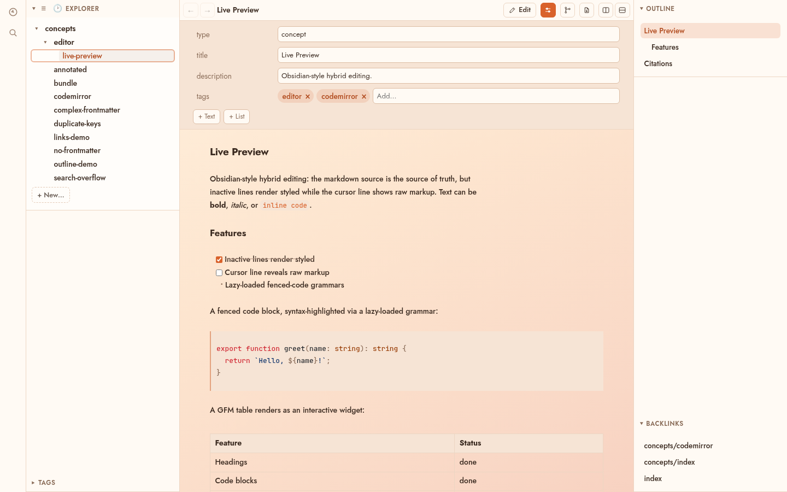
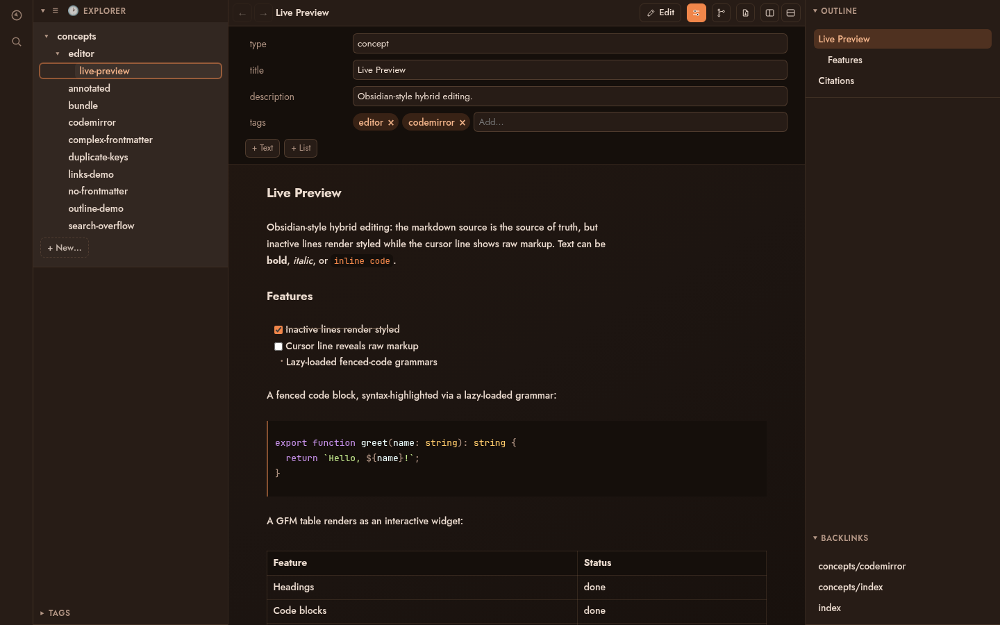
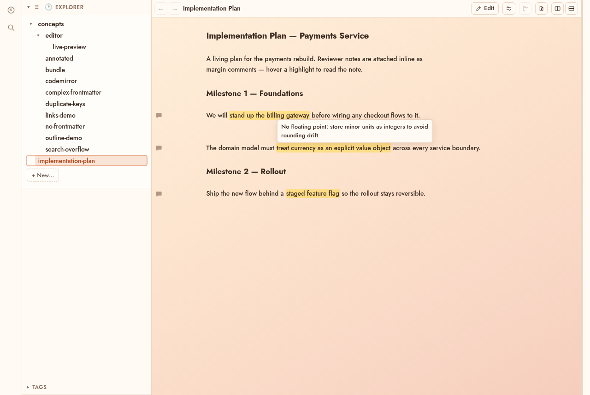
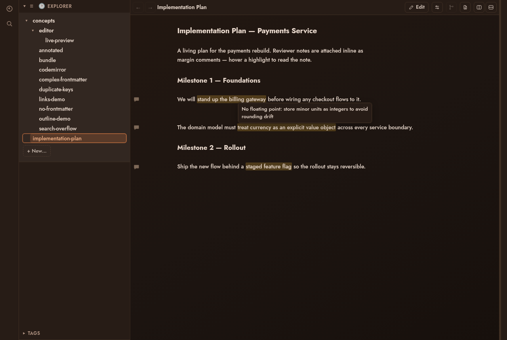

Live preview, wikilinks, backlinks, properties, full-text search — over
plain .md
files in your repo. Diff your edits against HEAD, step through history,
and collaborate through commits instead of a sync service.
Launch it from anywhere: sunstone ./my-notes


No vault to create, import, or convert into. Point Sunstone at any
directory of markdown — sunstone ./docs — and start
editing.
Files stay plain .md on disk. Nothing is indexed into a
database you can't grep; close the app and the folder is exactly what
it says it is.
First-class support for Google's Open Knowledge Format — an open standard for portable, agent-readable, vendor-neutral markdown bundles.
OKF is markdown with YAML frontmatter and wikilinks — if you can
cat a file you can read it, if you can
git clone you can ship it. Readable by humans, agents,
and any other editor; nothing to migrate.
No plugin ecosystem to assemble — these work out of the box.
Obsidian-style hybrid editing — inactive lines render styled while the cursor line shows raw markup, with highlighted code, task lists, and interactive GFM tables.
Navigate links between concepts, and see at a glance every other concept that links back to the one you're reading.
Edit typed frontmatter as structured fields — scalars, lists, tags — with complex YAML round-tripped verbatim.
Search across every concept with snippet results, plus a fuzzy quick-nav palette to jump anywhere instantly.
Select text and add a margin comment — plain CriticMarkup in the file, so feedback travels in git and any tool can read it.
Split the editor into columns and tiles to view several concepts side by side, with draggable dividers and a layout that persists across restarts.
A working-tree ↔ HEAD review toggle backed by a git seam, with a history stepper — word edits render as CriticMarkup track-changes.
Render the open concept to a print-quality preview with reader controls — save straight to PDF on macOS and Windows.
A warm amber palette that follows your OS color scheme, with an outline panel and a tag browser to keep large bundles navigable.
A bundle is just a git repository. On the desktop, toggle
Review to see your working tree diffed against
HEAD as inline track-changes, and step back through
history commit by commit.
For collaboration, run the server in git-synced mode: every save is a commit, and a sync loop fetches, rebases, and pushes against your origin. Multiple people edit the same bundle — not realtime, but conflict-safe: a clashing edit is forked beside the original instead of silently overwritten.
Sync state is git state. Anything the editor did, you can inspect, revert, or bisect from the command line.
See Sunstone Web$ git log --oneline docs/
a41f2c9 web: edit concepts/rollout-plan.md (dana)
7be03d1 web: edit concepts/rollout-plan.md (jonas)
f19c884 sync: rebase onto origin/main
c02a7de desktop edits, reviewed against HEAD
918bb3a agent pass over the architecture docsSelect text — in editing or reading mode — and choose Add comment. The span is highlighted, a comment icon sits in the gutter, and hovering shows the note.
On disk it's plain {==text==}{>>note<<}
CriticMarkup, so comments live in the .md file, travel
in git, and survive every other tool — useful for reviewing an
agent's generated docs before the next pass.


Sunstone Web serves any bundle in the browser — the same explorer, backlinks, tags, outline, and full-text search as the desktop app, plus authenticated editing. Every save is a git commit, so a team works on one bundle and reconciles through git. External pushes and edits reach every open browser over SSE.
Free and open source under the MIT license. Built with Tauri, SvelteKit, and Rust.